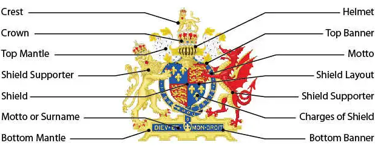
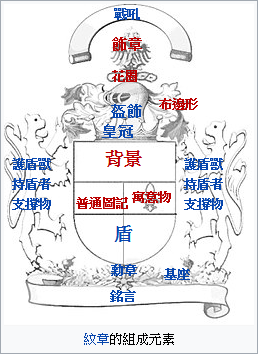

介紹
是一種特有的紋章設計，通常出現在紋章盾、外套或戰袍上。中世紀騎士用它來辨認其身份。盾徽是由一個盾牌、支撐物、飾章及銘言組成。至今，它仍用來作為識別個人、軍隊、教會、機關團體和公司企業的世襲或繼承性標記，而紋章學則是研究其使用、展示和規則的學術領域。
起源
12世紀封建領主和騎士在戰場上開始廣泛使用盾徽。從13世紀開始，盾徽進一步成為歐洲上層社會家族代代相傳的一種旗幟或標誌，尤其是有權使用盾徽的人，在法律或社會習慣上，開始逐漸演變為國家權力。在德語區，貴族和平民都會使用盾徽，而在歐洲其他地區，僅有貴族才能使用盾徽。之後教堂的神職人員也開始使用盾徽，接著是小鎮用於鎮民識別，以及像是大學及商貿公司這類皇家特許的機構。
現今仍有大量的機構及個人仍舊使用盾徽；很多歐洲城市和大學都有關於如何使用盾徽的指引，並且將其作為商標保護。很多社團也幫助設計並註冊個人盾徽。在某些國家，比如英格蘭和蘇格蘭，數個世紀以來仍舊保持與當時所授予的盾徽相同的紋章格局並持續管理至今。旗幟是由盾徽發展而來的，旗幟學和紋章學的藝術是非常相近的。盾徽是商業公司現代標誌的主要資源。
組成元素

